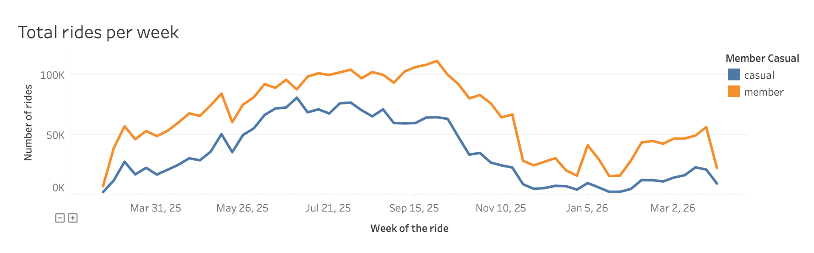
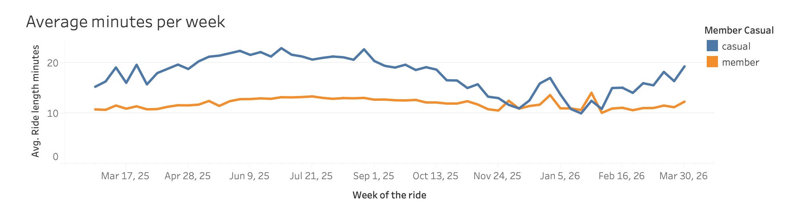

Cyclistic Bike-Share Analysis:
Converting Casual Riders to Annual Subscribers
The goal: A data-driven strategy to convert Cyclistic's casual cyclists into annual pass buyers. I identified differences in user habits using Python and Tableau-based analysis of 12 months of travel data, establishing the basis for a targeted marketing campaign.
Executive Summary (TL;DR)
- The Problem: Cyclistic aims to maximize profit by converting casual weekend/leisure riders into high-margin annual members.
- The Tech Stack: Python (Pandas) for high-volume data cleaning and feature engineering; Tableau for executive-level business intelligence.
- The Impact: Discovered distinct utility vs. leisure behavior, leading to 3 actionable marketing interventions designed to capture peak-season revenue.
Business Problem & Context
This analysis evaluates 12 months of historical trip data provided by Motivate International Inc. to drive annual subscriber growth.
To comply with strict data privacy standards, all personally identifiable information (PII) was omitted at the source. This restriction shifted the analytical focus from individual tracking to aggregated, high-density behavior patterns across Chicago.
Data Cleaning & Processing (Scalable Data Engineering)
Due to the multi-gigabyte volume of the 12-month dataset, standard spreadsheet applications failed to process the load, necessitating Python (Pandas) for data pipeline engineering.
Key Technical Milestones:
- Data Integration: Programmatically merged 12 distinct monthly CSV files into a single consolidated annual dataframe.
- Feature Engineering: Generated
ride_length (trip duration) and day_of_week to isolate granular usage patterns.
- Data Auditing & Filtering: Targeted and removed systematic anomalies, including negative trip durations and ultra-short trips (<30 seconds) with identical start/end stations (indicating mechanical faults).
- Null-Value Handling: Isolated missing station telemetry data specific to electric bikes to protect the spatial integrity of the analysis.
Analysis & BI Insights
Aggregated analysis revealed structural divergence in user behavior and ride cadence between the two cohorts:
- The Commuter Footprint (Members): Annual member usage heavily clusters around standard commuting windows (06:00–09:00 and 15:00–19:00) on weekdays, confirming utility-driven transit patterns.
- The Leisure Footprint (Casuals): Casual rider volume peaks sharply during weekends (09:00–18:00) and late-afternoon leisure windows on weekdays. A localized sub-trend also emerged during late-night hours on Fridays and Saturdays, isolating a weekend nightlife demographic.
- Duration Metrics: Despite lower ride counts, casual riders maintain a substantially higher average time spent per trip compared to annual members.


- The Summer Seasonality Spike (Casuals): While annual members maintain consistent usage patterns year-round, casual rider duration surges dramatically with the onset of the summer season. Time-series analysis shows a massive spike triggered by warmer weather and high-density Chicago public events—such as major music festivals (e.g., Lollapalooza), waterfront activities, and community running races. During this peak window, casual riders completely dominate engagement metrics, shifting from standard A-to-B transit to extensive, leisure-oriented exploration.
Strategic Recommendations
Based on the insight gaps identified in the data, I propose the following 3 strategic recommendations for Cyclistic's management:
1. Proactive Campaign Timing
Data shows that casual rides surge in May and peak until September. Launch the marketing campaign in mid-April to convert users into annual members right before the high season starts.
2. Targeted Lifestyle Marketing
Emphasize freedom, speed, and weekend fun in marketing collateral. The campaign must highlight that for regular weekend riding, an annual membership is the most seamless and cost-effective option available.
3. The 15-Minute E-Bike "Hook" Strategy
The average trip duration for casual riders is 21 minutes, making pay-per-minute fees a significant pain point. Introduce 1 daily 15-minute free e-mobility session exclusive to annual members. Because this is lower than their 21-minute average, riders will naturally spill over the limit and pay regular minute rates, driving high annual conversions while generating extra revenue.